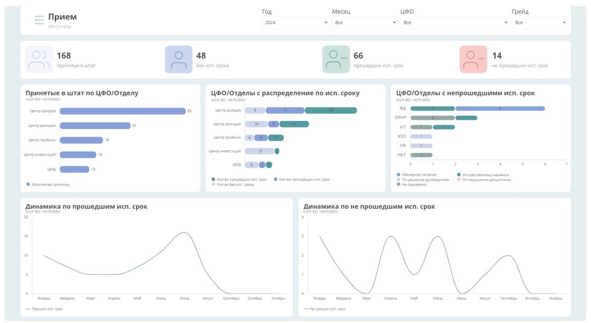
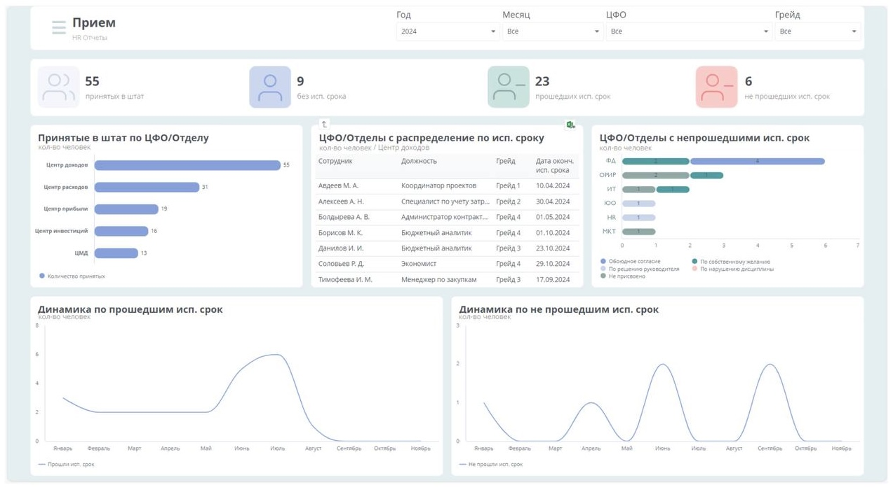

Цель проекта
Объединение данных из ROP (SAP BO) и e-Staff в единую аналитическую платформу для HR-подразделения.
Роль в проекте
В рамках проекта я отвечал за подготовку и трансформацию данных, построение витрин, BI-моделирование и разработку дашбордов в Visiology, а также за регулярное обновление данных и взаимодействие с HR-бизнесом.
Зона ответственности
Источники и загрузка данных
SAP BW, e-Staff
• сбор CSV-выгрузок из SAP BW
• загрузка данных в PostgreSQL
Хранилище и трансформации
PostgreSQL
• проектирование таблиц
• materialized views
• загрузка данных из mat view
Интеграция e-Staff
Airflow
• проектирование процесса
• weekly XML-выгрузки
• контроль пайплайнов
BI-слой
Visiology, DAX, JS
• моделирование данных
• дашборды
• кастомные визуализации
Поддержка
• еженедельное обновление
• запуск скриптов
• обновление BI-отчетов
Взаимодействие с бизнесом
На каждом этапе проекта я регулярно созванивался с ключевыми сотрудниками HR-отдела и руководителем направления, демонстрировал промежуточные результаты и вносил правки в бизнес-логику и визуализацию.
Результаты
В рамках проекта реализовано 5 управленческих дашбордов:
Прием
Дашборд предоставляет информацию о показателях найма сотрудников:
- Количество принятых сотрудников.
- Число сотрудников, успешно прошедших и не прошедших испытательный срок.
- Динамика прохождения испытательного срока по месяцам.
- Разрез данных по ЦФО и отделам.
Функционал включает фильтрацию по году, месяцу, ЦФО и грейду, а также детализацию данных через таблицы по клику на диаграммы.
Увольнения
Дашборд показывает ключевые метрики по увольнениям:
- Общее количество уволенных сотрудников.
- Число сотрудников, не прошедших испытательный срок.
- Средний возраст и стаж уволенных.
- Разделение причин увольнений (круговая диаграмма) и распределение по стажу, ЦФО, отделам и должностям.

Фильтры и детализация данных по таблицам помогают проводить глубокий анализ, включая переход на лист с расширенной таблицей.

Текучесть
Дашборд позволяет анализировать показатель текучести кадров в компании:
- Основной числовой показатель текучести.
- Горизонтальная диаграмма с распределением текучести по ЦФО.
- График, показывающий динамику текучести по месяцам.
Функционал фильтрации доступен по году и ЦФО.

Отпуск
Дашборд предоставляет подробную информацию об отпускной активности сотрудников:
1) Смешанная диаграмма:
- Столбцы отображают количество сотрудников с неоплачиваемыми, оплачиваемыми и плановыми отпусками.
- Линии показывают плановое и фактическое количество дней отпуска помесячно.
2) Горизонтальные диаграммы:
- Количество незапланированных обязательных дней в году.
- Количество незапланированных остатков по годам (распределение по отделам).
3) График выполнения плана:
- Процент выполнения плана отпусков по месяцам.
4) Диаграмма Ганта:
- В левой части — таблица с детальной информацией о сотрудниках (имя, должность, ЦФО, количество обязательных и остаточных дней, план и фактическое использование отпуска).
- В правой части — диаграмма Ганта, отражающая отпускные периоды каждого сотрудника:
- Серая полоса: Запланированный, но не использованный отпуск.
- Красная полоса: Незапланированный отпуск.
- Зеленая полоса: Запланированный и отгулянный отпуск в соответствии с планом.
Дашборд поддерживает фильтрацию по году, ЦФО и отделу.

Вакансии
Дашборд предоставляет полную информацию о состоянии вакансий и их кандидатах:
1) Ключевые показатели:
- Количество открытых вакансий, множественных вакансий, с истекающим сроком и просроченных.
2) Воронка: Отображает количество вакансий на разных этапах.
3) Горизонтальные диаграммы:
- Количество кандидатов по вакансиям.
- Количество множественных вакансий по подразделениям.
4) Круговые диаграммы:
- Процент кандидатов с распределением по источникам.
- Процент вакансий с распределением по статусам.
5) Фильтры: год, месяц и подразделения.

При клике на воронку открывается таблица со списком вакансий.

При выборе вакансии в таблице происходит переход на отдельный лист с детальной информацией:
1) Воронка кандидатов: Этапы обработки кандидатов по выбранной вакансии.
2) Фильтруемая таблица вакансий: Позволяет выбрать год, месяц, фазу вакансий и подразделение для детализации, чтобы отобразить список других вакансий, а при клике на эту таблицу дашборд выстраивается в соответствии с выбором.
3) Детализированная таблица кандидатов: Подробные данные о кандидатах, связанных с выбранной вакансией.